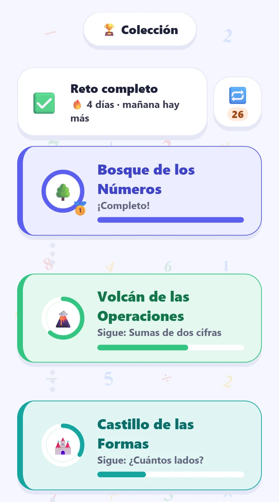
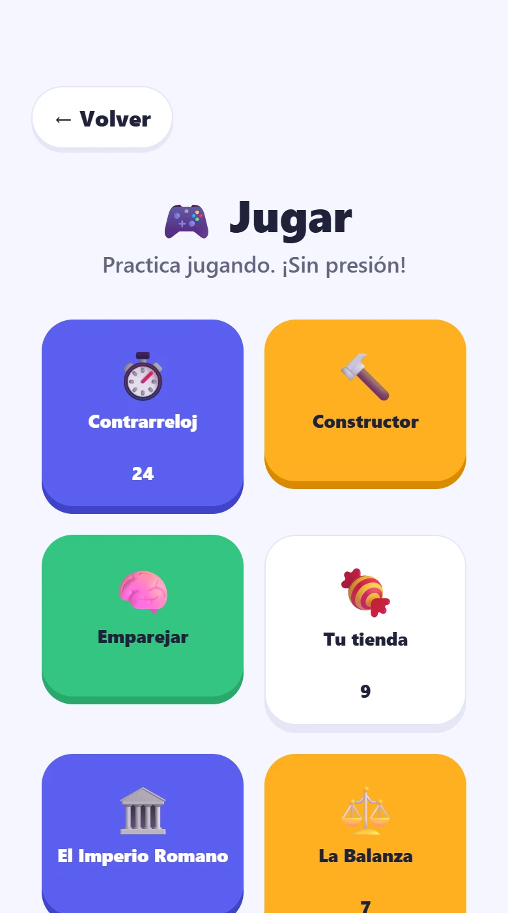
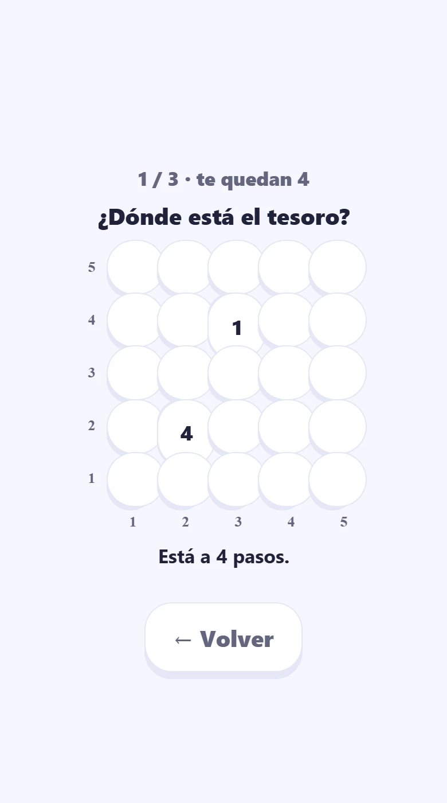
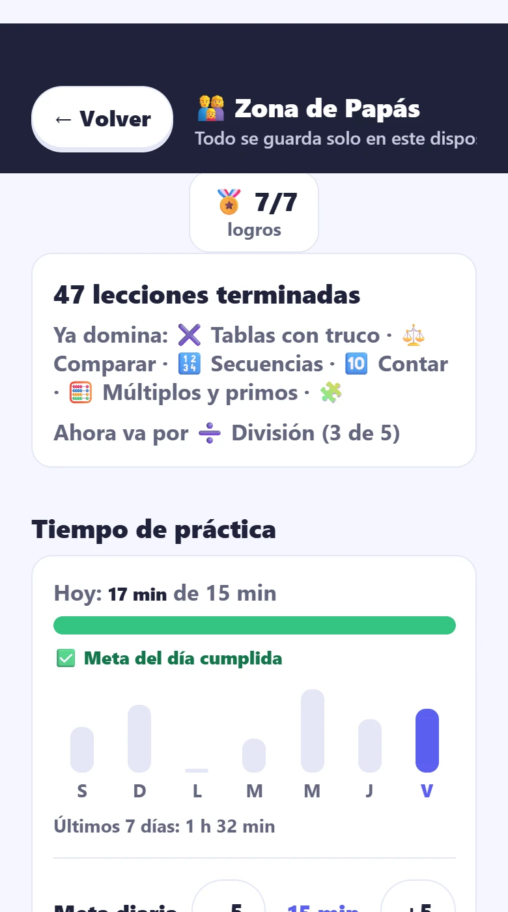
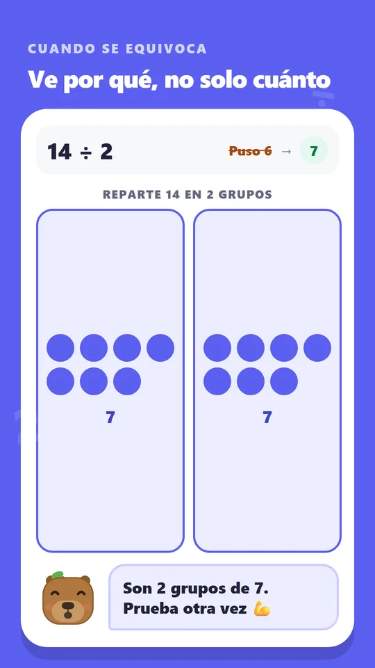

Qué aprende
Veintiocho temas, de contar hasta despejar la X.
No es una app de tablas de multiplicar con otro nombre: cubre el currículum de primero a sexto básico. Y el niño no elige de una lista — recorre un mapa de cinco islas, y dentro de cada tema las lecciones van una detrás de otra, con un cofre al final que guarda su pegatina.
-
Bosque de los Números6 temas · 21 leccionesContarCompararSecuenciasRedondearMúltiplos y primosDecimales
-
Volcán de las Operaciones7 temas · 26 leccionesSumaRestaTablas con trucoTablas difícilesDivisiónOperar fraccionesPorcentajes
-
Castillo de las Formas5 temas · 21 leccionesFigurasMedirÁreaÁngulosCoordenadas
-
Observatorio de los Datos4 temas · 13 leccionesGráficosTablas de datosPromedioAzar
-
Cohete de la Aventura6 temas · 21 leccionesFraccionesLa horaEl dineroNúmeros romanosEcuacionesProblemas
Por dentro
Así se ve.





Para el papá o la mamá
Lo que no vas a encontrar.
-
Sin publicidad
Ni banners, ni vídeos, ni nada que interrumpa a un niño mientras aprende.
-
Sin recolectar datos
Lo que hace el niño se queda en el teléfono. No hay cuentas que crear ni servidores nuestros donde guardar nada.
-
Sin compras del niño
No hay monedas, ni vidas, ni saltarse un paso. Lo que decide un adulto se decide en la Zona de Papás.
Lo que sí vas a encontrar
Una zona que es tuya, no del niño.
Detrás de una puerta que un niño de seis años no pasa —hay que tocar el número más grande de cuatro, dos veces— está lo que un papá viene a mirar.
-
Qué está aprendiendo
Dicho en una frase, no en un puntaje: qué temas domina, en cuál va ahora y cuánto le falta.
-
Una prueba que le tomas tú
Eliges hasta cuatro temas y el nivel, y la app arma una tanda sin pistas ni reintentos. Al final te dice cómo le fue en cada tema, y lo compara con la vez anterior. Al niño no se le pone nota.
-
Cuánto usa la app
Los minutos de hoy, la semana entera y una meta diaria que pones tú.
Cuánto cuesta
Se prueba gratis y no hay reloj corriendo.
Gratis para siempre
La isla del Bosque entera y las tablas fáciles, más
una lección de fracciones, una de la hora y una de gráficos: dieciocho lecciones
completas, tres juegos y la práctica sin fin de cuatro temas.
No es una prueba de siete días que después se apaga: lo gratis se queda gratis.
El que quiera todo lo demás —los 28 temas, los 13 juegos y la prueba para el
papá— se suscribe, y puede cancelar desde la misma pantalla de Google Play.
Se ajusta a él, no al revés.
Matibu mide cómo responde y mueve el nivel: al que va rápido no lo aburre, y al que le cuesta no lo deja atrás.